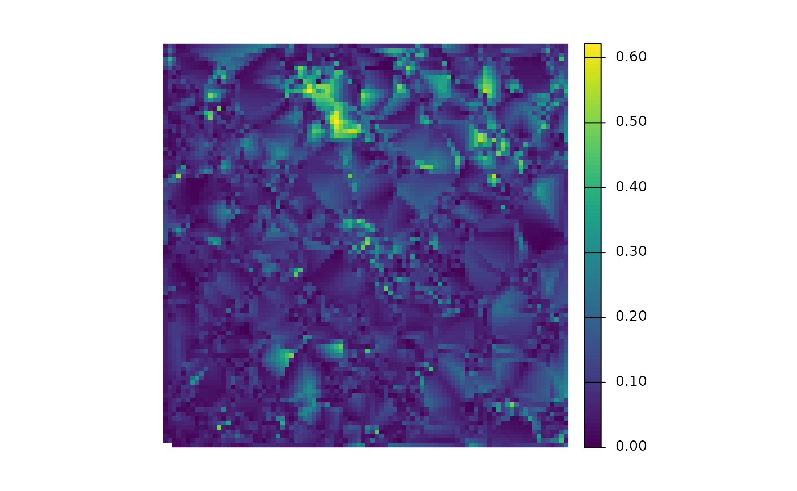
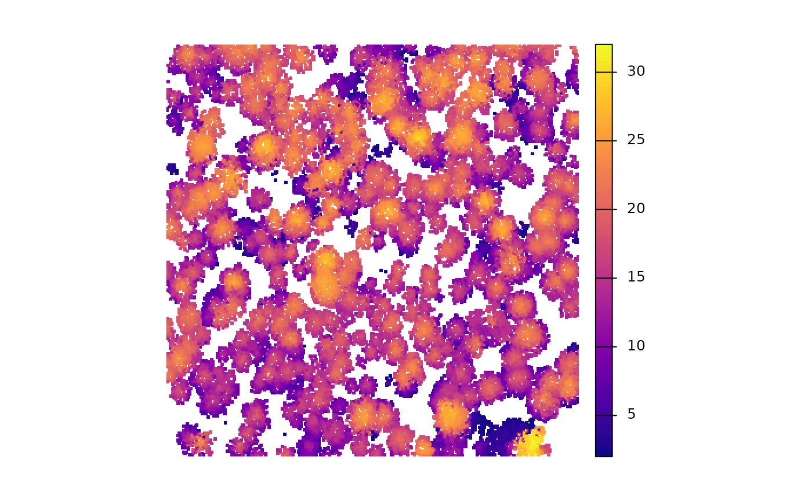
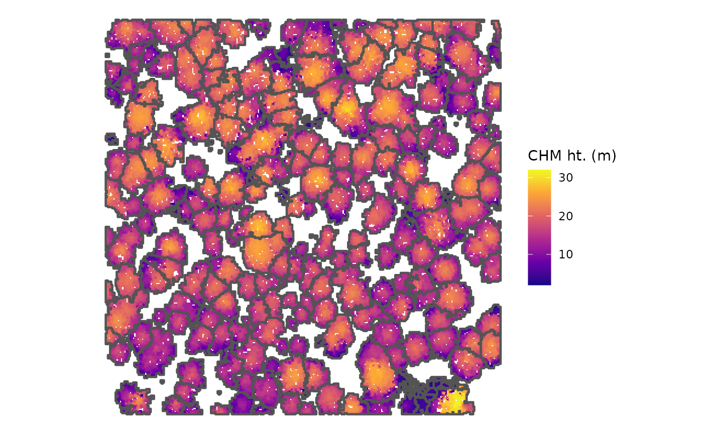

To get started, make sure you have the latest version of R (at least 4.0). Download and installation instructions for R are here: https://cran.r-project.org/
Most users will also want to have a recent version of the RStudio integrated development environment (IDE). New versions are released regularly, so we recommend updating often to get access to the latest and greatest features.
Download the current version of RStudio Desktop here: https://posit.co/download/rstudio-desktop/. Most readers can use the free, open source version of RStudio Desktop.
Rtools is also needed since cloud2trees utilizes packages that rely
on a C++ toolchain like brms. Make sure to install the
RTools version to match the version of R that you have installed: https://cran.r-project.org/bin/windows/Rtools/
Once you have R, Rstudio, and Rtools installed, the process of installing cloud2trees should be the same for all computers.
Package Installation
during the installation process we’ll use the pkgbuild
package to ensure Rtools is working correctly.
# install pkgbuild
install.packages("pkgbuild")let’s check if Rtools is installed correctly
# check for Rtools which is required to build packages
pkgbuild::check_build_tools(debug = TRUE)This command will issue one of two responses:
- Your system is ready to build packages! - continue through the installation process
-
building r package from source requires installation of
additional build tools
- select “yes”
- an error may be issued: Error: Could not find tools necessary to
compile a package
- but the build tools should begin installing (minimize R window to see if its back there)
- after the download completes, try
pkgbuild::check_build_tools()again- the response should be Your system is ready to build packages!
If there are still issues, return to the Rtools installation and ensure the RTools version matches your R version.
Next, we need to install dependent packages from CRAN
# install remotes package
install.packages("remotes")
# install tidyverse package
install.packages("tidyverse")
# install sf package...
install.packages("sf")
# install terra package...
install.packages("terra")
# install BH package...
install.packages("BH")Now, we’ll install packages that are not from CRAN
-
lasRpackage (https://r-lidar.github.io/lasR/) enables large-scale point cloud processing with speed -
TreeLSpackage (https://github.com/tiagodc/TreeLS) helps us extract DBH from the point cloud -
leafRpackage (https://github.com/DRAAlmeida/leafR) computes leaf area density (LAD) profiles from the point cloud -
LadderFuelsRpackage (https://github.com/olgaviedma/LadderFuelsR) helps us extract CBH from the point cloud
# install lasR for point cloud processing
install.packages("lasR", repos = 'https://r-lidar.r-universe.dev')
# install github package from "tiagodc/TreeLS"
remotes::install_github(repo = "tiagodc/TreeLS", upgrade = F)
# install github package from "DRAAlmeida/leafR"
remotes::install_github(repo = "DRAAlmeida/leafR", upgrade = F)
# install github package from "olgaviedma/LadderFuelsR"
remotes::install_github(repo = "olgaviedma/LadderFuelsR", upgrade = F)Finally, we will install our cloud2trees package, which
integrates all these other tools and several others to enable end-to-end
processing of point clouds to generate individual tree forest
inventories
# install github package from "georgewoolsey/cloud2trees"
remotes::install_github(repo = "georgewoolsey/cloud2trees", upgrade = F)let’s load the cloud2trees package into our current
session and we’ll also load some of the tidyverse and
terra for working with raster data
Get External Data
The cloud2trees package relies on external data to
estimate tree DBH, USDA Forest Service’s Forest Inventory Analysis (FIA)
forest type, and canopy fuel loading. If you plan to use this
functionality, the data must be downloaded the first time you use the
cloud2trees package. All downloads combined use ~7 GB of
storage space.
To filter DBH values in high density point clouds or to estimate tree
DBH from extracted tree height data requires training data to model DBH
using height. cloud2trees does this using site-specific
allometric equations made from FIA field plots extracted from the
TreeMap 2022 data product (Houtman et al. 2025).
TreeMap is a model of FIA plot locations imputed throughout forested
areas of the Contiguous United States at 30 m spatial resolution.
cloud2trees::get_treemap()This took ~3 minutes with a fast internet connection (900 mb per second) but ~19 minutes on Forest Service internet (50 mb per second)
External data is required to estimate FIA forest type group and append this to the extracted trees. Forest type groups are identified using the Forest Type Groups of the Continental United States data (Wilson 2023). This forest type group layer was developed using data from over 213,000 national forest inventory plots measured during the period 2014-2018 from the FIA program. This raster layer has 30-meter resolution and covers the forested extent of the Contiguous United States.
cloud2trees::get_foresttype()To estimate tree crown biomass for extracted trees, cloud2trees uses LANDFIRE’s Forest Canopy Bulk Density (CBD) maps to spatially determine the fuel loading of the area. This is currently done using LANDFIRE’s Forest Canopy Bulk Density (CBD) 2023 estimates (“CONUS LF 2023”) at 30-meter resolution over the Contiguous United States.
cloud2trees::get_landfire()With slow connections on US Federal Government computers, this command has been known to fail. If a red message stating SSL connect error appears, simply retry the command until it connects with the USGS server hosting the data.
At this point, the full functionality of cloud2trees is
ready to use. We recommend starting with the example dataset in the
cloud2trees Data Structure and Functionality section to
familiarize yourself with cloud2trees.
Quick Tests
we’ll use the MixedConifer.laz file that ships with the
lidR package for the demonstration
# path to las data
# a test las file but this could also be a directory path with >1 .las|.laz files
## ... notice, we didn't directly install "lidR" above
## ... it was installed with the other packages as a dependency
i <- system.file(package="lidR", "extdata", "MixedConifer.laz")let’s try to process this point cloud using all defaults in the
cloud2trees::cloud2trees() function
# run it
cloud2trees_ans <- cloud2trees::cloud2trees(
output_dir = tempdir()
, input_las_dir = i
)what did we get back?
# did it do it?
cloud2trees_ans %>% names()
#> [1] "crowns_sf" "treetops_sf" "dtm_rast" "chm_rast"
#> [5] "foresttype_rast"is there a DTM?

is there a CHM?

is there a tree inventory?
cloud2trees_ans$treetops_sf %>% dplyr::glimpse()
#> Rows: 340
#> Columns: 25
#> $ treeID <chr> "1_481294.4_3813010.9", "2_481312.9_3813010.…
#> $ tree_height_m <dbl> 15.85, 13.44, 22.07, 22.93, 24.43, 22.23, 11…
#> $ crown_area_m2 <dbl> 10.8750, 6.4375, 6.3750, 26.6875, 10.1250, 1…
#> $ fia_est_dbh_cm <dbl> NA, NA, NA, NA, NA, NA, NA, NA, NA, NA, NA, …
#> $ fia_est_dbh_cm_lower <dbl> NA, NA, NA, NA, NA, NA, NA, NA, NA, NA, NA, …
#> $ fia_est_dbh_cm_upper <dbl> NA, NA, NA, NA, NA, NA, NA, NA, NA, NA, NA, …
#> $ dbh_cm <dbl> NA, NA, NA, NA, NA, NA, NA, NA, NA, NA, NA, …
#> $ is_training_data <lgl> NA, NA, NA, NA, NA, NA, NA, NA, NA, NA, NA, …
#> $ dbh_m <dbl> NA, NA, NA, NA, NA, NA, NA, NA, NA, NA, NA, …
#> $ radius_m <dbl> NA, NA, NA, NA, NA, NA, NA, NA, NA, NA, NA, …
#> $ basal_area_m2 <dbl> NA, NA, NA, NA, NA, NA, NA, NA, NA, NA, NA, …
#> $ basal_area_ft2 <dbl> NA, NA, NA, NA, NA, NA, NA, NA, NA, NA, NA, …
#> $ ptcld_extracted_dbh_cm <dbl> NA, NA, NA, NA, NA, NA, NA, NA, NA, NA, NA, …
#> $ ptcld_predicted_dbh_cm <dbl> NA, NA, NA, NA, NA, NA, NA, NA, NA, NA, NA, …
#> $ tree_cbh_m <dbl> NA, NA, NA, NA, NA, NA, NA, NA, NA, NA, NA, …
#> $ is_training_cbh <lgl> NA, NA, NA, NA, NA, NA, NA, NA, NA, NA, NA, …
#> $ forest_type_group_code <chr> NA, NA, NA, NA, NA, NA, NA, NA, NA, NA, NA, …
#> $ forest_type_group <chr> NA, NA, NA, NA, NA, NA, NA, NA, NA, NA, NA, …
#> $ hardwood_softwood <chr> NA, NA, NA, NA, NA, NA, NA, NA, NA, NA, NA, …
#> $ comp_trees_per_ha <dbl> NA, NA, NA, NA, NA, NA, NA, NA, NA, NA, NA, …
#> $ comp_relative_tree_height <dbl> NA, NA, NA, NA, NA, NA, NA, NA, NA, NA, NA, …
#> $ comp_dist_to_nearest_m <dbl> NA, NA, NA, NA, NA, NA, NA, NA, NA, NA, NA, …
#> $ max_crown_diam_height_m <dbl> NA, NA, NA, NA, NA, NA, NA, NA, NA, NA, NA, …
#> $ is_training_hmd <lgl> NA, NA, NA, NA, NA, NA, NA, NA, NA, NA, NA, …
#> $ geometry <POINT [m]> POINT (481294.4 3813011), POINT (48131…would a CHM with tree crowns overlaid look neat?
cloud2trees_ans$chm_rast %>%
terra::as.data.frame(xy=T) %>%
dplyr::rename(f=3) %>%
ggplot2::ggplot() +
ggplot2::geom_tile(
mapping = ggplot2::aes(x=x,y=y,fill=f)
) +
ggplot2::geom_sf(
data = cloud2trees_ans$crowns_sf
, color = "gray33"
, fill = NA
, lwd = 0.8
) +
ggplot2::scale_fill_viridis_c(option = "plasma") +
ggplot2::labs(fill="CHM ht. (m)") +
ggplot2::theme_void()
neat-o!
Next, it is recommended to check out the Overview